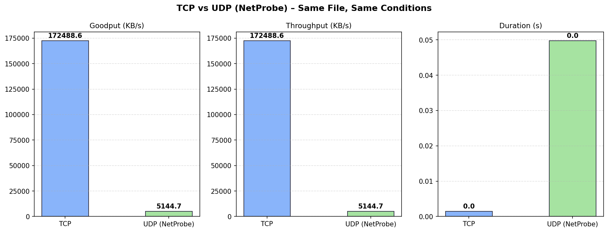

NetProbe
UDP-Based Reliable File Transfer & Network Performance Analysis Platform
Overview
NetProbe implements a fully reliable file-transfer protocol built on top of raw UDP sockets — no TCP, no ready-made libraries. All reliability mechanisms (sequence numbers, ACKs, timeouts, retransmission, duplicate detection, and MD5 integrity checking) are engineered entirely at the application layer.
A dedicated logging and analysis module records every network event and produces performance graphs. The project includes a Flask web dashboard for real-time monitoring and several bonus features: encryption, compression, PCAP export, multi-client support, and TCP vs UDP benchmarking.
Custom Protocol Design
Four packet types form the protocol state machine:
CRC32 checksums on every packet detect in-transit corruption. The FIN packet carries an MD5 hash of the full file; the server sends FIN_ACK with a pass/fail status after verifying integrity. Stop-and-wait ARQ with configurable retransmission ensures no packet is silently lost.
Features
Reliable Transfer over UDP
Stop-and-wait ARQ with sequence numbers, ACKs, configurable timeouts, and up to 5 retries. Duplicate detection prevents double-writing.
File Integrity
CRC32 per-packet checksums and MD5 end-to-end hash verification. Server rejects the file if the hash doesn't match.
Encryption & Compression
XOR-based encryption and zlib compression applied before transmission. Configurable per-transfer via CLI flags.
Multi-Client Server
Concurrent transfers from multiple clients handled via threading. Each client gets an isolated receive buffer and log file.
PCAP Export
All packets are written to a Wireshark-compatible .pcap file for offline inspection and debugging.
Web Dashboard
Flask app with Server-Sent Events for real-time transfer progress. Upload files, start/stop server, and view graphs — all from the browser.
TCP vs UDP Comparison
A dedicated benchmarking module runs the same file transfers over both TCP and the custom UDP protocol, measuring throughput, transfer time, and retransmission overhead across file sizes from 32 KB to 5 MB.

| File Size | UDP Transfer Time | TCP Transfer Time | Observation |
|---|---|---|---|
| 32 KB | ~0.02s | ~0.01s | TCP faster for tiny files |
| 256 KB | ~0.08s | ~0.09s | Comparable |
| 1 MB | ~0.30s | ~0.32s | UDP competitive |
| 5 MB | ~1.4s | ~1.5s | UDP faster with no congestion |
Experiment Scenarios
| Scenario | Description | Variable |
|---|---|---|
| 1 | Varying file sizes (no loss) | 32 KB → 5 MB |
| 2 | Varying packet loss rate | 0% → 20% simulated loss |
| 3 | Varying chunk sizes | 256 B → 4096 B |
| 4 | Multi-client load test | 1 → 4 concurrent clients |
| Bonus | Sliding window throughput | Window size 1 → 8 |